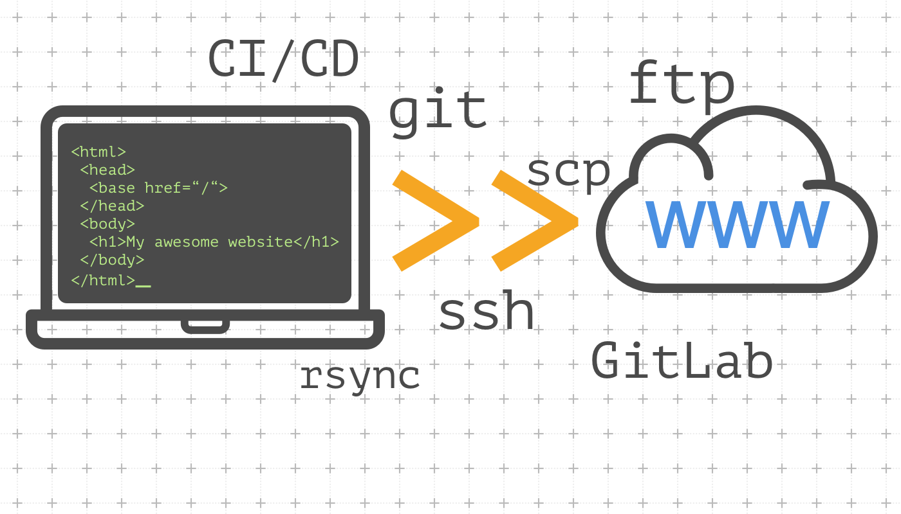

Posted date: 26/08/2023
1.GitHub là gì?
- GitHub là một hệ thống quản lý dự án và phiên bản code, hoạt động giống như một mạng xã hội cho lập trình viên. Các lập trình viên có thể clone lại mã nguồn từ một repository và GitHub chính là một dịch vụ máy chủ repository công cộng, mỗi người có thể tạo tài khoản trên đó để tạo ra các kho chứa của riêng mình để có thể làm việc.
- GitHub là một dịch vụ nổi tiếng cung cấp kho lưu trữ mã nguồn Git cho các dự án phần mềm. GitHub có đầy đủ những tính năng của Git, ngoài ra nó còn bổ sung những tính năng về social để các developer tương tác với nhau.
- Tìm hiểu thêm về Git.
- GitHub cung cấp các tính năng social networking như feeds, followers, và network graph để các developer học hỏi kinh nghiệm của nhau thông qua lịch sử commit.
- GitHub trở thành một yếu tố có sức ảnh hưởng lớn trong cộng động nguồn mở. Cùng với Linkedin, Github được coi là một sự thay thế cho CV của bạn. Các nhà tuyển dụng cũng rất hay tham khảo GitHub profile để hiểu về năng lực coding của ứng viên.
2.Deloy Website là gì?
- Deploy (hay Deployment) được hiểu đơn giản là triển khai, sắp đặt một thứ gì đó.
- Trong lĩnh vực phần mềm, Deploy được hiểu là triển khai tiến hành sử dụng phần mềm hoàn thiện trong môi trường ứng dụng thực tế. Nghĩa của chúng gần giống với install, thế nhưng Deploy mang một sắc thái ý nghĩa riêng, nó biến những Component được tham chiếu từ phần mềm trên máy chủ hoặc được sử dụng thông qua Internet từ bên ngoài hay những Component được tham chiếu từ các phần mềm khác thành trạng thái có thể sử dụng và tiếp cận được.

- Một thuật ngữ luôn đi kèm với Deployment chính là Software Deployment. Thuật ngữ này được hiểu là quy trình bàn giao phần mềm đã hoàn thiện cho khách hàng hoặc từng phần mềm cụ thể cho người tiêu dùng. Software Deployment cần được kiểm tra kỹ lưỡng để đảm bảo không còn bất kỳ lỗ hổng và lỗi nào trước khi tiến hành (Mình sẽ làm phần Software Delployment cho post sau để tìm hiểu thêm).
3.Lợi ích khi Deploy Website?
- Lợi ích đầu tiên cũng phổ biến nhất là chúng đẩy mạnh tốc độ phát triển kinh doanh bằng các giải pháp phần mềm hữu ích. Ngoài ra, với các giải pháp phần mềm doanh nghiệp có thể tăng cường các hoạt động nội bộ, từ đó tăng tiềm lực của mình.
- Nền tảng này có thể tự động hóa các giải pháp liên quan đến kinh doanh từ đó củng cố quy trình quản lý.
- Trong kỷ nguyên kỹ thuật số, Software Deployment có thể hỗ trợ doanh nghiệp kết nối với các thiết bị từ xa và người dùng có thể làm việc từ mọi thiết bị bất cứ lúc nào.
4.Hướng dẫn Deploy Website
Bước 1: Tạo repository.
- Để bắt đầu Deploy Website, trước hết bạn cần truy cập vào trang GitHub cùng với tài khoản mà bạn muốn sử dụng để Deploy Website.
- Đến trang GitHub Tại đây.
- Khi đã đăng nhập thành công, bạn tìm đến button có dấu "+" ở thanh trên màn hình và chọn
New repository
- Tại ô điền Repository name, bạn phải đặt tên theo mẫu dưới đây:
-
username.github.io
- Với username là tên mà bạn đặt khi tạo và đăng nhập tài khoản.
- Tiếp đến là trạng thái thư mục Public và Private.

- Vì Deploy Website bản chất mọi người đều có thể tương tác lên nó, tức là Website phải được giữ trạng thái
Public
mới mang lại hiệu quả trên.
- Cuối cùng, nhớ tick vào
Add a README file
để push file lên GitHub.
Bước 2: Thiết lập repository.
- Vào repository bạn vừa tạo. Chọn
Setting
- Hướng mắt vào Sidebar bên trái đến
Code và Automation
và chọn Pages
- Nhìn đến mục
Branch
và chon main
Bước 3: Cài đặt Git, tạo Folder và đăng nhập.
- Tải Git Tại đây
- Sau khi tải git xong, bạn tạo một Folder mang tên
username.github.io
.
- Vào trong thư mục, bấm chuột phải và chọn
Open Git Bash here
.
- Trong Git Bash, các bạn nhập theo hình dưới đây với
username
là tên mà bạn đăng kí và email
là email bạn dùng đăng kí tài khoản.
Bước 4: Sử dụng Git để tạo file HTML gốc và các lệnh push File lên GitHub
- Tại Git Bash ban nãy, hãy nhập lệnh dưới đây để tạo một repository tại Folder.
- Tiếp theo, bạn nhập lệnh dưới đây để tạo 1 File
index.html
.
- Khi đã tạo thành công File HTML, chúng ta tiếp tục đến với các lệnh để push File lên GitHub.
- Trong Git Bash, các bạn nhập theo các lệnh dưới đây.
- Tại
Initial commit
, bạn có thể nhập các tin nhắn khác nhau, các tin nhắn này sẽ hiển thị bên cạnh các File Code của bạn trong GitHub.
Bước 5: Test đường dẫn Website
- Khi đã thực hiện thành công các bước trên, ta tiến hành test đường dẫn đến Website của bạn nhé.
- Đường dẫn của chúng ta sẽ có mẫu như sau:
username.github.io
- Đường dẫn này cũng có thể được xem là tên
Folder
mà bạn tạo ban nãy với Git Bash
Bước 6: Khắc phục lỗi khi push File lên GitHub bằng Git Bash
- Khi ta push File lên GitHub sẽ có tỉ lệ bị lỗi như thế này:
- Lúc này ta sẽ sử dụng lệnh của Git để khắc phục lỗi, sử dụng lên sau:
- sau khi
Pull
xong, ta tiến hành push File với các lệnh Push
như mình hướng dẫn ở bước trên.
5.Tạm kết
- Trên đây là hướng dẫn chi tiết các bước để các bạn dễ dàng Deploy một Website của bản thân GitHub.
Chúc bạn thành công!
- --Mọi thắc mắc xin liên hệ:
-
Facebook
-
Box chat